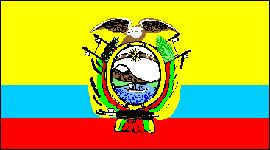
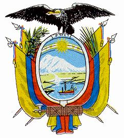

Ecuador
|  |  |
Información general
Nombre oficial: República del Ecuador
Área: 275 830 km²
Costas: 2237 km
División política:21 Provincias
Provincia Capital
- Arch. Colón (Galápagos) Puerto Baquerizo Moreno
- Azuay Cuenca
- Bolívar Guaranda
- Cañar Azogues
- Carchi Tulcán
- Cotopaxi Latacunga
- Chimborazo Riobamba
- El Oro Machala
- Esmeraldas Esmeraldas
- Guayas Guayaquil
- Imbabura Ibarra
- Loja Loja
- Los Ríos Babahoyo
- Manabí Porto Viejo
- Morona Santiago Macas
- Napo Tena
- Pastaza Puyo
- Pichincha Quito
- Sucumbíos Nueva Loja
- Tungurahua Ambato
- Zamora Chinchipe Zamora
Unidad monetaria: Sucre
1 Sucre = 100 centavos
Idiomas: Español (oficial); quechua, jíbaro, shuara, colorado y unos diez dialectos indígenas más, algunas comunidades de origen extranjero hablan también inglés y chino (no oficiales)
Fiesta nacional: 10 de agosto, Primer Grito de la Independencia
Gentilicio: Ecuatoriano
Hora oficial: GMT -5 horas (normal/verano); Galápagos: GMT -6 (normal)
Miembro de: ONU, OEA, ALADI, Pacto Andino
Curiosidades
Según un informe de las Naciones Unidas, Ecuador posee la sexta parte del número de especies animales y vegetales del mundo. Algunas de las más curiosas se encuentran en el archipiélago de Colón, o Galápagos, situado a 870Km de las costas del Ecuador, en una valiosa reserva de plantas y animales que no existen en ninguna otra parte del planeta.
Además de su territorio continental, Ecuador posee el archipiélago de Colón, o Galápagos, formado por diecisiete islas grandes y más de cien pequeñas. Otras islas son las de Tola y San Pedro en la desembocadura del río Santiago; Puna en el golfo de Guayaquil y la del Muerto al Sudoeste.
El Cotopaxi es el volcán activo más alto de la Tierra.
La bella ciudad de Quito se encuentra edificada al pie del monte Pichincha, otra cumbre volcánica en actividad.
Información adicional en Internet.
Perfil Ecónomico
Perfil Demográfico
Fuente: www.inec.gov.ec/
Perfil Cultural
Alfabetismo: 92 %
Religión:
- Católicos: 94,4%
- Protestantes: 3,0%
- No religiosos: 2,4%
- Otras: 0,2%
Algunas figuras notables:
- Jorge Carrera Andrade (1903-1979). Poeta y diplomático
- Manuel Chili (1701-. Escultor y tallador
- Oswaldo Guayasamín (1919-1999 ). Pintor
- Jorge Icaza (1906). Escritor
- Jacinto Jijón Caamaño (1890-1950). Académico de la Lengua y Arqueólogo
- Numa Pompilio Llona (1832-1907). Poeta, escritor y diplomático
- Juan Montalvo (1832-1889). Escritor y humanista
- José Joaquín Olmedo (1780-1847), Poeta y patriota
- Miguel de Santiago (1626-1706). Escultor
Lugares declarados patrimonio mundial por la UNESCO
- Archipiélago de Colón o Galápagos (Parque Nacional).
- Quito (Ciudad Vieja).
- Parque nacional Sangay.
Sistema de Gobierno
Constitución vigente: 5 de junio de 1998
Sistema ejecutivo: Presidente y Vicepresidente, elegidos por voto popular directo para un término de cuatro años y sin derecho a reelección. Gabinete de catorce ministros y un Secretario General de la administración pública. El presidente designa el gabinete, los representantes diplomáticos y ciertos funcionarios administrativos y es responsable por la dirección de las relaciones internacionales.
Sistema legislativo: Congreso Nacional (unicameral, doce diputados elegidos por sufragio universal directo en votación nacional para un período de cuatro años y sesenta y cinco elegidos por provincias para un período de dos años; no son reelegibles.
Sistema judicial: Corte Suprema de Justicia (treinta y un magistrados), ocho cortes superiores y los juzgados de provincia y cantón. Existe también el Tribunal de Garantías Constitucionales, el Tribunal Fiscal, el de lo Contencioso Administrativo, el de Menores y la Corte de Justicia Militar.
Gobierno subdivisional: El Presidente nombra los Gobernadores de Provincias. Existen además, 196 cantones, 323 parroquias urbanas y 770 parroquias rurales.
Aproximación histórica
Situada en los Andes Septentrionales, Ecuador limita al norte con Colombia, con Perú al este y al sur. Tiene costas con el Océano Pacífico.
Dos ramas del sistema de los Andes (la Occidental y la Oriental) cruzan el territorio ecuatoriano desde Carchi a Loja. Ambas están unidas por estribaciones transversales que forman hoyas o cuencas hidrográficas con hermosos valles.
En Ecuador se distinguen tres regiones: la costa de unos 800 Km de largo, la Sierra con unos 2 500 metros de altura media y altos picos como el Chimborazo y el Cotopaxi, y el Oriente, mucho menos poblado y cubierto por la selva.
El país es atravesado por la línea del Ecuador, de donde se deriva su nombre y queda en el centro de la zona tórrida, pero goza de toda clase de climas por lo montañoso del territorio.
Durante la época precolombina el país fue habitado por diferentes pueblos indígenas y fue finalmente conquistado por los incas. Al llegar los españoles en 1526, el reino inca ya se encuentra debilitado por luchas intestinas. En 1534, los españoles atacan Quito, destruida por los incas en su huida y sobre las ruinas fundan San Francisco de Quito. Hasta 1740, Ecuador pertenece al Virreinato del Perú, hasta que junto con la actual Colombia y Venezuela, pasa al Virreinato de Nueva Granada. En 1822, el general Antonio José de Sucre derrota a los españoles y el país pasa a formar parte de la Gran Colombia, separándose de esa federación en 1830, para proclamarse estado soberano.
Ecuador posee producción de azúcar, cemento y cerveza, la industria pesquera es un fuerte renglón de su economía y entre sus principales productos agrícolas se encuentran café, bananos y cocos.
«-- ir al comienzo
«-- regresar